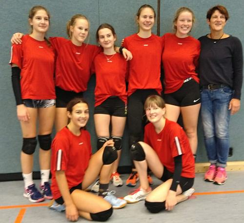
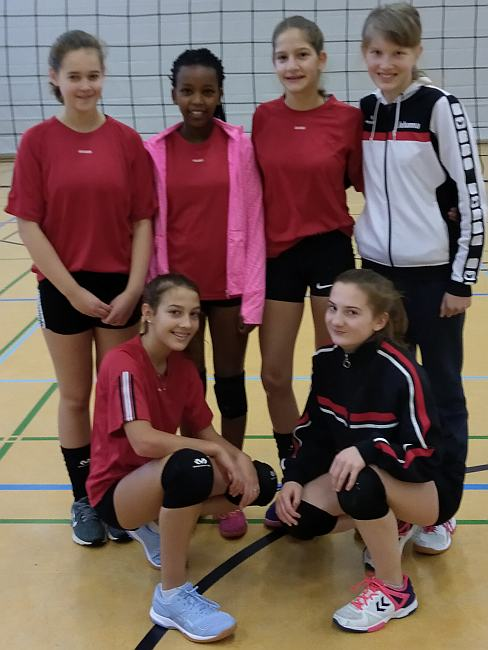
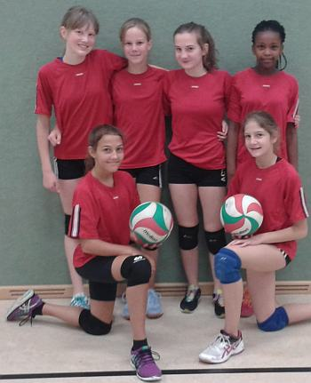
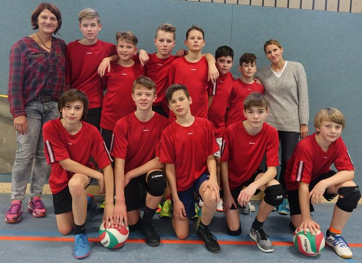
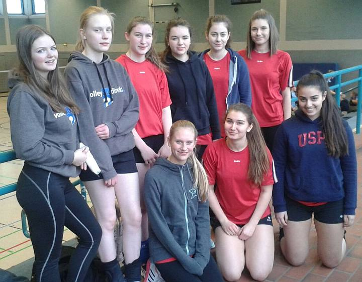

2019

Täglich grüßt das Murmeltier
Volleyball-Kreismeisterschaften - Vereinsspielerinnen heben das Niveau
Von Sabine Bartling
Am Dienstag, dem 03.12.2019, war es wieder soweit. Es war zu den Kreismeisterschaften geladen worden und, wie mittlerweile leider üblich, fand kein großes Turnier in der Wettkampfklasse II (Jahrgang 2003-2006) der Mädchen und Jungen statt, da die Anzahl der teilnehmenden Mannschaften sehr gering war. Die Jungen hatten dabei noch das Glück, dass sich mit der August-Hermann-Francke-Gesamtschule und der August-Hermann-Francke-Hauptschule immerhin zwei weitere Schulen gemeldet hatten. Die Mädchen spielten dagegen leider nur ein Match gegen die August-Hermann-Francke-Gesamtschule. Ein großes Turnier wäre mit Sicherheit schöner, da es zu mehr Spielen kommt und somit zu mehr Spannung, aber das kann nun nicht erzwungen werden.
Die Jungen begannen im ersten Spiel gegen die Gesamtschule. Hier zeigte sich, dass ein Spiel einfach etwas anderes ist als Training. Es dauerte einige Zeit, bis die Jungs sich in das Spiel fanden. Es wurde immer besser und richtig spannend. Der erste Satz ging jedoch an die Gesamtschule mit 25 zu 23. Ein sehr knapper Spielstand. Da sich in beiden Teams einige Vereinsspieler tummelten, kam es zu gelungenen und intensiven Ballwechseln, wobei die Gesamtschule leider auch im zweiten Satz die Oberhand behielt und diesmal sogar eindeutiger mit 25 zu 17 gewann.
Das zweite Spiel war dann bereits eine Entscheidung. Um eventuell noch als Gesamtsieger aus dem Turnier hervorzugehen, mussten wir gegen die Hauptschule gewinnen und diese wiederum im letzten Spiel die Gesamtschule schlagen. Ein kleiner Hoffnungsschimmer.
Mit der stärksten Mannschaft starteten wir und es entspann sich ein richtiger Krimi. Das Spiel war geprägt von Emotionen, Einsatzwillen, Kampfgeist und vielen sehr guten Aktionen. Hätten wir im ersten Spiel bereits so gespielt, wären wir bestimmt als Sieger vom Platz gegangen. So mussten wir aber mit der ersten Niederlage leben und machten vieles besser in dieser rasanten zweiten Begegnung. Zu 23 und zu 22 haben wir letztendlich verloren, aber wir waren auch stolz darauf, ein so gutes Spiel gemacht zu haben. Somit endete das Turnier für die Jungen mit dem dritten Platz. Am Ende wurde die Hauptschule Erster.
Man hat jedoch gesehen, wie sehr sich unser Team im Vergleich zum letzten Jahr gesteigert hat und das zu beobachten hat sehr viel Spaß gemacht. Mal sehen, was das nächste Jahr so bringt.
Wir haben mit den folgenden Schülern gespielt: Tom Strate, Enno Tennstedt, Tobias Fillies, Marlon Grittern, Till Morawietz, Jannis Chmiel, Fynn Rode, Jordan Stahl, Emil Henneken
Bei den Mädchen, die direkt im Anschluss spielten, wurden die Nerven aller Beteiligten geschont, da sich die Mannschaft als sehr dominant in allen Belangen zeigte. Die August-Hermann-Francke-Gesamtschule unterlag in einem eher einseitigen Spiel zu 10 und zu 14. Somit waren wir bei den Mädchen verdient Kreismeister geworden.
Auch in der Mädchenmannschaft gibt es immer mehr Vereinsspielerinnen, wodurch sich das Niveau sehr gehoben hat. Sicherheit, Routine und Erfahrung führen eben zu gelungenen Ballwechseln.
Wir werden sehen, ob wir in diesem Jahr bei den Bezirksmeisterschaften bestehen können. Insgesamt ist es sehr erfreulich, sowohl bei den Mädchen als auch bei den Jungen, dass die Teilnahme an der AG so intensiv gestaltet wird. Dadurch können zusätzlich zu den Vereinsspielern und -spielerinnen auch Spieler und Spielerinnen, die nur an der AG teilnehmen, integriert werden, was ein großer Erfolg ist. Ein großes Lob an alle AG Teilnehmer, die schon seit Jahren jeden Freitag in der Halle fleißig üben!
Auf in die zweite Runde
Grabbianer haben sich bei der Bezirksmeisterschaft tapfer geschlagen
Von Sabine Bartling
Nach der doppelten Kreismeisterschaft in der Wettkampfklasse III (Jahrgänge 2004-2007) der Jungen und Mädchen ging es Mitte Januar auf in die nächste Runde. Die Bezirksmeisterschaften für die Jungen fanden in Bielefeld statt und für die Mädchen in Detmold.
Die Jungen stiegen als Erste in den Ring, und allein schon die Gruppeneinteilung zeigte, dass es schwer werden würde. Mit dem Reismann Gymnasium Paderborn und der Marienschule aus Bielefeld war die Gruppe sehr stark besetzt. Da nur der Gruppenerste das Endspiel bestreiten würde, mussten wir schon richtig gut spielen, um eine Chance zu haben.
Im ersten Spiel ging es gegen die Marienschule, die vermeintlich schwächere Mannschaft in unserer Gruppe, und es entwickelte sich ein spannendes Spiel. Im gegnerischen Team spielten Mannschaftskollegen unserer Spieler, die sich als sehr stark entpuppten. Im ersten Satz hieß es, sich auf das Niveau einzustellen. Es wurde gekämpft um jeden Ball und alles gegeben. 17:25 gegen uns ging dieser Satz aus, aber wir wollten uns nicht geschlagen geben. Es wurde knapp im zweiten Satz, aber letztendlich hat es nicht gereicht und wir mussten mit 22:25 in die Niederlage einwilligen. Schade. Aber es war ein schönes Spiel, in dem unsere Jungen gezeigt haben, dass sie sich berechtigt für die Bezirksmeisterschaften qualifiziert hatten.
Nun war das Reismann Gymnasium unser Gegner und diesmal wurde es dann doch eindeutig. Zu 11 und zu 16 wurden die beiden Sätze verloren, da unser Gegner uns in nahezu allen Elementen überlegen war. Aber wir haben uns im Verlauf des zweiten Satzes gesteigert und das ist wichtig für eine Weiterentwicklung. Als kleiner Trost: am Ende war das Reismann der Bezirksmeister, also die beste Mannschaft des Turniers.
Im Spiel um Platz 5 stand das Ev. Gymnasium Werther auf der anderen Seite. Hier wurde deutlich, dass die zweite Gruppe wesentlich schwächer besetzt war. Beide Sätze wurden gewonnen. Zu 24 uns zu 17 wurden die Wertheraner besiegt und alle Spieler kamen zum Einsatz. Das war ein gutes Ende für einen aufregenden Tag.
Unsere Spieler: Tom Strate, Tobias Fillies, Enno Tennstedt, Pascal Subota, Marlon Grittern, Tim Karger, Jonathan Eggert.
Die Anreise der Mädchen war deutlich kürzer, da wir nur zur August-Hermann-Francke Gesamtschule fahren mussten. Aber es war ein ebenso spannender Tag mit einem guten Turnier.
Im ersten Spiel hieß unser Gegner Gymnasium St. Xaver Bad Driburg und es war gut, dass diese Mannschaft sich als nicht so stark erwies und wir die Chance hatten, uns gut für den weiteren Turnierverlauf einzuspielen. Es wird einfach jedes Mal wieder deutlich, dass so ein Turnier auch nervös macht, wodurch es manchmal schwer wird, seine Leistungsfähigkeit abzurufen. Zu 16 und zu 23 wurden die beiden Sätze gewonnen und vor allem im zweiten Satz zeigten unsere Mädchen eine starke kämpferische Leistung. Es gelang nicht immer alles, wodurch die Bad Driburger bedenklich näher kamen, aber am Ende schafften wir es, die Oberhand zu behalten.
Das zweite Spiel stand an und wie bei den Jungen hieß der Gegner Reismann Gymnasium Paderborn. Auch hier trafen wir auf zum Teil bekannte Spielerinnen, die sich im letzten Jahr schon als sehr stark erwiesen hatten. Das war leider in diesem Jahr nicht anders. Technisch, taktisch und zum Teil auch körperlich waren sie uns überlegen, wodurch die beiden Sätze zu 9 und zu 3 gegen uns ausgingen. Das war eine Lehrstunde. Gegen eine komplette Vereinsmannschaft ist es eben sehr schwer zu bestehen, wenn die eigene Mannschaft nur zum Teil im Verein spielt und ansonsten nur in der AG in der Schule trainiert. Darum heißt es: Nicht traurig sein.
Da wir den zweiten Platz in unserer Gruppe belegt hatten, hatten wir die Gelegenheit, gegen das Ratsgymnasium aus Minden anzutreten, die in ihrer Gruppe erster geworden waren. Und das wurde das Highlight des Tages für unser Team. Es entwickelte sich ein tolles Spiel, das alle technischen und taktischen Raffinessen des Volleyballs beinhaltete. Es gab schöne und auch lange Ballwechsel und alle Spielerinnen zeigten ihr ganzes Können. Auch wenn wir am Ende zu 15 und zu 13 verloren haben, konnten wir stolz sein auf so ein schönes Spiel. So teilten wir uns im Endklassement den 3. Platz mit dem Gymnasium Werther und das Reismann Gymnasium besiegte im Endspiel das Ratsgymnasium Minden. Somit war auch bei den Mädchen eine starke Konkurrenz am Start.
Unsere Spielerinnen: Sina Eikens, Rahel Arnhold, Janne Berkemann,Terry Waweru, Marie Brand.
2018
Zweimal Kreismeister
Gegen die Grabbe-Mädchen tritt nur ein Konkurrenz-Team an
Von Sabine Bartling (Text & Foto)

So konnte das Sportjahr enden. Sowohl die Mädchen als auch die Jungen der Wettkampfklasse III (2004-2007) haben das Jahr erfolgreich als Kreismeister abgeschlossen. Bei den Mädchen, die am 22.11.2018 in Detmold in der August-Hermann-Francke Gesamtschule antreten mussten, war die Konkurrenz zahlenmäßig nicht groß, bzw. minimal. Es gab nur einen Gegner, nämlich die AHF Gesamtschule. In diesem Spiel zeigte es sich, dass es sich doch lohnt, regelmäßig die AG zu besuchen und im Optimalfall in einen Verein einzutreten. Durch eine derartige Trainingsmöglichkeit gelingt es dann, dominant zu sein. Die AHF Gesamtschule wurde 25:8, 25:8 und 25:12 geschlagen. Das war ein sehr guter Erfolg, der durch eine ausgeglichene Besetzung innerhalb der Mannschaft erzielt wurde. Jetzt müssen die Mädchen am 17.01.2019 in Detmold bei den Bezirksmeisterschaften zeigen, ob sie diese gute Leistung und das gute Ergebnis auch gegen andere Schulen aus dem Bezirk wiederholen können. Wir sind sehr gespannt und freuen uns darauf.Zu der Mannschaft gehörten: Sina Eikens, Marie Brand, Rahel Arnhold, Terry Waweru und Janne Berkemann.
Die Jungenkonkurrenz war bei den Kreismeisterschaften stärker besetzt. Unsere Schule trat mit 2 Teams an, die sich mit der AHF Gesamtschule und der AHF Hauptschule messen mussten. In dieser Vierergruppe spielte Jeder gegen Jeden. Dabei kam es bei dem hausinternen Duell zwischen der ersten und zweiten Mannschaft zu einem 2:0 Erfolg der ersten Mannschaft. Diese kristallisierte sich dann zum Favoriten heraus, da sie die AHF Gesamtschule ebenfalls mit 2:0 klar besiegen konnte. Im Endspiel gegen die AHF Hauptschule kam es zu einem spannenden Duell. Es wurde um jeden Ball gekämpft und alle Kräfte freigesetzt, sodass es am Ende 2:0 für Grabbe 1 hieß und wir Kreismeister waren. Im Vergleich zum Vorjahr, wo uns das noch nicht gelungen war, wurde deutlich, dass wir uns in allen spielerischen Bereichen stark verbessert hatten. Das war ein spannendes Endspiel. Für das zweite Team des Grabbe Gymnasiums verlief das Turnier leider nicht so erfolgreich. Auch die Gesamtschule und die Hauptschule erwiesen sich als die stärkeren Mannschaften, indem es in beiden Spielen 2:0 gegen uns endetet. Das war schade, aber auch in diesem Team wurde sehr gut gekämpft und alles gegeben. Am 15.01.2019 heißt es nun für Grabbe 1 auf zu den Bezirksmeisterschaften nach Bielefeld. Hier werden Teile unserer Mannschaft auf Mannschaftsmitglieder aus der Vereinsmannschaft treffen, was immer für zusätzliche Spannung sorgt. Auch hier ist die Vorfreude groß und wir hoffen auf erfolgreiche Spiele. Grabbe 1: Tom Strate, Tobias Fillies, Enno Tennstedt, Pascal Subota, Jonathan Eggert
Grabbe 2: Jannis Chmiel, Fynn Rode, Muhammed Caliskan, Tim Karger, Marlon Grittern.
2017
Doppelt genäht hält besser
Grabbe-Mädchen (WK 2 und 3) holten sich in spannenden Spielen den Kreismeistertitel

Bei den diesjährigen Kreismeisterschaften im Volleyball waren es die Mädchen, die sich den Titel des Kreismeisters erspielen konnten. Wie in jedem Jahr gab es leider nur wenige teilnehmende Schulen. Neben uns startete bei den Mädchen die August-Hermann-Francke Gesamtschule sowohl in der Wettkampfklasse II (Jahrgänge 2001-2004), als auch in der WK III (2003-2006). Das hieß für beide Teams unserer Schule, das eine Spiel zu gewinnen, um zu den Bezirksmeisterschaften fahren zu können.Die WK III Mannschaft, die „Kleinen“, machten den Anfang. Schnell entwickelte sich ein ganz spannendes Spiel, da der Gegner sich als sehr stark erwies. Zu 22 ging der erste Satz verloren und die Gesichter wurden etwas lang, da man mit so einer Gegenwehr nicht gerechnet hatte. Aber im zweiten Satz besannen sich die Mädchen auf ihre Stärken und gewohnt gekonnt schlugen sie die Gesamtschule 25 zu 9. Der dritte Satz musste die Entscheidung bringen. 15 zu 7 ging er aus und die gute Laune war wieder da. Jetzt wird es spannend, wie die Mädchen bei den Bezirksmeisterschaften abschneiden werden, zu denen sie das erste Mal fahren werden, da in der bisherigen Wettkampfklasse IV lediglich die Kreismeisterschaft ausgespielt wurde.
Die folgenden Mädchen spielten für unsere Schule: Sina Eikens, Rahel Arnhold, Hannah Fürstenberg, Marie Brand, Terry Waweru, Johanna Hermann.
Die „großen“ Mädchen spielten das zweite Spiel an diesem Tag. Auch in diesem Spiel ging es über 3 Sätze. Nachdem der erste Satz 25 zu 22 verloren wurde, drehte unser Team im zweiten Satz auf und gewann souverän 25 zu 10. Im ersten Satz profitierte die AHF Gesamtschule von einer sehr starken Aufschlägerin, die wir leider nicht in den Griff bekamen. Zumindest in diesem Satz. Das lief dann im zweiten Satz wesentlich besser und wir konnten zeigen, dass wir doch auf allen Positionen ausgeglichen besetzt waren. Auch der dritte Satz verlief danach eindeutig für uns, indem wir 15 zu 8 gewannen.
Ein schöner Vormittag, der mit zwei Kreismeistertiteln endetet.
Hier spielten: Jacqueline Wolf, Theresa Krol, Jana Gossen, Ela Yildiz, Johanna Oborowski, Lara Meister, Michelle Borries.

Bei den Jungen der WK III (2003-2006) ging es etwas turbulenter zu. Immerhin stritten 6 Teams um den Kreismeistertitel, wodurch ein richtiges Turnier mit 2 Dreiergruppen gespielt wurde. Dabei stellte die AHF Hauptschule 3 Teams, die AHF Gesamtschule ein und unsere Schule 2 Teams. Die erste Mannschaft, für die Tom Strate, Tobias Fillies, Pascal Subota, Enno Tennstedt, und Finn Blanke spielte, hatte gleich zu Beginn einen schweren Gegner mit der AHF Hauptschule 1, die am Ende auch Meister wurde. Zu 16 und zu 21 gingen die beider Sätze aus, da die AHF Hauptschule doch sehr stark besetzt war und die meisten Spieler 1-2 Jahre älter waren als unsere Spieler. Aber sie haben sich sehr gut gewehrt und ein schönes Spiel gezeigt, vor allem in kämpferischer Hinsicht. Um Gruppenzweiter zu werden und sich noch eine Chance auf die Überkreuzspiele zu wahren, mussten sie das nächste Spiel gewinnen, was dann auch recht eindeutig zu 20 und zu 14 gelang. Leider erwies sich die AHF Gesamtschule im Überkreuzspiel als zu stark (15:25, 22:25), wodurch wir um Platz 3 spielen mussten. In einem wahren Krimi, in dem mal die AHF Hauptschule 2, mal wir die Nase vorn hatten, mussten wir uns am Ende mit dem 4. Platz zufrieden geben (28:26, 15:25,14:16). Aber das Team hat sehr schön gekämpft und eine starke Leistung geboten. Ein Dank gilt an dieser Stelle Frau Strate, der Mutter eines Spielers, die bereits das zweite Mal erfolgreich das Coachen übernahm, da wir mit zwei Teams angetreten waren und jedes Team einen Coach haben sollte.
Die zweite Jungenmannschaft, bestehend aus Muhammed Caliskan, Marlon Grittern, Fynn Rode, Jannis Chmiel, Ferdi Dollmann und Tim Karger, belegte in ihrer Dreiergruppe den dritten Platz. Gegen die am Ende zweitplatzierte Mannschaft der AHF Gesamtschule verlor unser Team zu 17 und zu 11. Hier zeigte sich die AHF Gesamtschule doch eindeutig im technischen und taktischen Bereich überlegen. Das führte schon zu traurigen Gesichtern, aber wir hatten ja noch ein Spiel. Die AHF Hauptschule 2 erschien als ein machbarer Gegner, aber trotzdem kamen wir über ein 15:25 und 14:25 nicht hinaus. Der Kampfgeist war groß, aber im technischen und taktischen Bereich gab es einige Defizite, wodurch wir am Ende einen geteilten 5. Platz zusammen mit der AHF Hauptschule 3 einnahmen.
Aber im nächsten Jahr sind wir wieder dabei und wissen, was uns dann erwartet. Spaß hatten die Spieler und wenn sie weiterhin in der AG dabei sind, wird es im nächsten Jahr ganz spannend.

Diesmal mit Konkurrenz
Die Volleyball-Mädchen vom Grabbe erreichen auf Bezirksebene den dritten Platz
Von Sabine Bartling
Am 24.01.2017 fanden die Bezirksmeisterschaften im Volleyball statt, für die sich unsere Wettkampf II Mannschaft bei den Kreismeisterschaften qualifiziert hatte. Bis nach Bünde ging die lange Fahrt, die wir gemeinsam mit der August-Hermann-Francke Gesamtschule angetreten haben.
Wir waren in einer Dreiergruppe, zusammen mit dem Besselgymnasium Minden und der Marienschule Bielefeld.
Gleich das erste Spiel zeigte, dass unser Gegner, das Besselgymnasium, wohl zu den Favoriten zählte. Die Mannschaft bestand ausschließlich aus Vereinsspielern, die zusätzlich zum Teil auch zu Auswahlmannschaften gehörten. Somit war das erste Spiel bereits eine sehr große Herausforderung. Der erste Satz ging mit 25:5 verloren. Es war etwas schwierig für unsere Spielerinnen, sich auf sehr harte und platzierte Aufschläge und auf ein schnelles und sicheres Spiel des Gegners einzustellen. Zudem war es sehr schade, dass wir auf Anna Techmanski und Jette Frei verzichten mussten, die sich am Wochenende zuvor leider verletzt hatten. Immerhin konnte uns Jette begleiten, um uns anzufeuern. Sie hätten sicherlich dazu beigetragen, dass man die Köpfe nicht so sehr hängen ließ. Aber wir hatten ja noch eine Chance und im zweiten Satz fingen die Mädchen an zu kämpfen. Sichere Aufschläge, gute Angriffe und einige gute Abwehraktionen führten dazu, dass wir in diesem Satz immerhin 15 Punkte machen konnten. 25:15 ging der Satz aus, was einem Erfolg gleichkam bei diesem starken Gegner. Die Laune stieg wieder.
Gegen die Marienschule wurde das Spiel zu einem Krimi. Es ging hin und her. Mal führten wir, mal die andere Mannschaft. 25:22 ging der erste Satz aus und die Stimmung war super. Jetzt wollten wir auch den zweiten Satz gewinnen. Das Ergebnis zeigt, dass es noch knapper gehen kann: 28:26! Unser erster Sieg nach einem guten Spiel.
Im Spiel um Platz 3 stand die Mannschaft des Gymnasiums am Markt Bünde auf der anderen Seite. Wieder hatten wir sehr gute Chancen. 25:17 war daher das Ergebnis des ersten gewonnenen Satzes. Aber irgendwie begannen die Mädchen, den Gegner etwas zu unterschätzen, der wiederum immer kampfstärker wurde. Da nur 2 Sätze gespielt wurden, hieß es, mindestens 18 Punkte zu erreichen. Zwischenzeitlich sah es nicht danach aus, da wir weit zurücklagen. Aber Dank sehr guter Aufschläge und eines wiedererstarkten Kampfgeistes verloren wir zwar mit 26:28, aber die Punkte reichten, um das Spiel insgesamt zu gewinnen.
Ein dritter Platz! Das war letztendlich der beste Platz, den wir belegen konnten, da wir im Endspiel sehen konnten, dass sowohl das Besselgymnasium, als auch das Reismann-Gymnasium aus Paderborn zu stark für uns waren.
Also hieß es: sich freuen und mit guten Vorsätzen für das nächste Jahr die Heimreise antreten.
Die Volleyball-Amazonen vom Grabbe: Ilke Kacar, Angelina Homic, Lisa Hobbensiefken, Emelie Seidler, Hannah Weykamp, Jacqueline Wolf, Jana Gossen, Theresa Krol.

{kind=link}
{kind=link}
{kind=link}